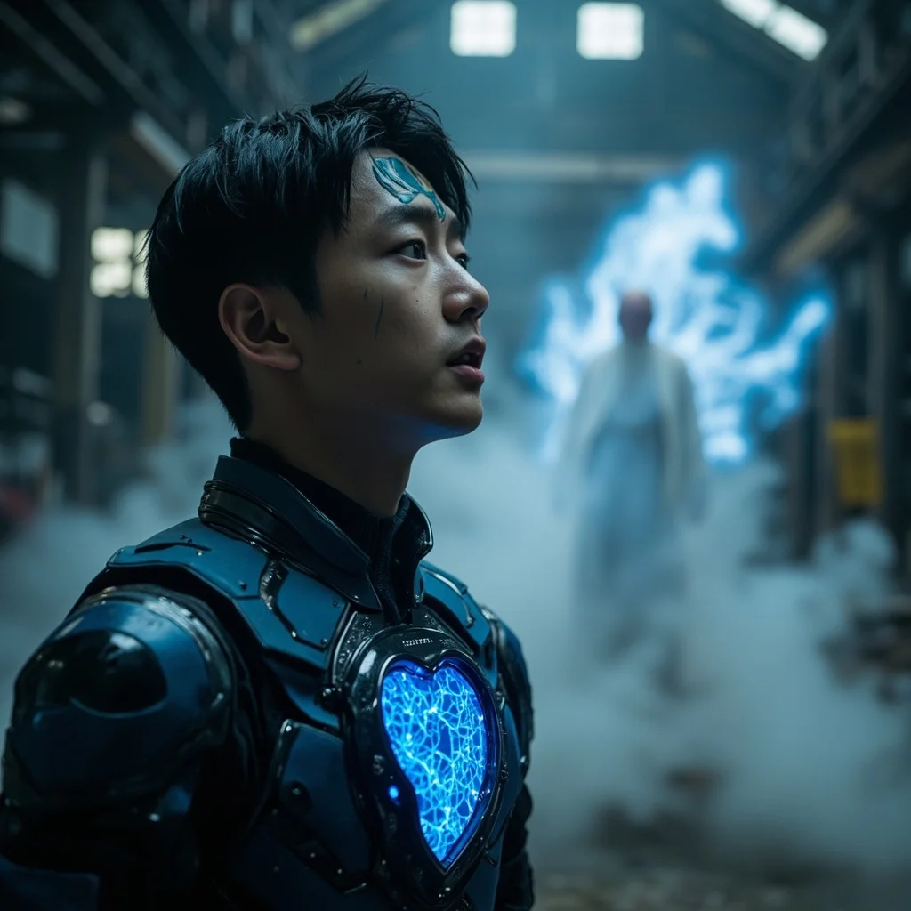

場景一
廢棄工廠的相遇
廢棄工廠內，空氣彷彿凝固。林塵瞪大眼睛，不敢置信地看著眼前的老者玄元。工廠外的天空灰濛濛一片，老者飄浮在半空，長袖白袍在微風中輕輕飄動，彷彿不食人間煙火的仙人。他的眼中帶著深邃的智慧光芒，一道微弱但精純的靈氣從指尖溢出，在空中形成精巧的圖案。

場景二
林塵的震驚
林塵全身僵住，額頭上藍色電路紋路微微發光，胸口的心臟型量子晶片散發著藍色光芒。他滿臉難以置信的看著玄元，聲音都在顫抖。玄元微微一笑，目光深邃而悠遠，開始訴說數百年前的往事——那時他是這片土地最強的修士之一，也是靈芯系統的創造者。
場景三
末法時代的真相
玄元揭示了震撼的真相——末法時代並非天災，而是一場人為的災難。數百年前，修仙文明達到巔峰，修士們通過靈芯技術讓修仙普及化，但各勢力為爭奪靈氣資源爆發了毀天滅地的大戰。戰後，靈氣被強大的禁制封印，世界陷入靈氣枯竭。而如今，封印正在鬆動，那些在大戰中沉睡的古老存在也將陸續甦醒。
場景四
靈芯變的傳承
林塵的靈芯系統界面突然彈出新窗口：「檢測到傳承信息，正在解鎖隱藏功能⋯⋯」「隱藏功能解鎖：靈芯變」「功法類型：特殊功法」「效果：將靈芯與肉身融合，大幅增強戰鬥力」「當前掌握程度：0%」。玄元從懷中取出一塊古樸的玉珮交給林塵，這是尋找其他散落靈芯晶片的信物。
場景五
朝陽下的新使命
玄元的身影逐漸消散在空氣中，只留下林塵一人站在工廠裡，手中握著那塊玉珮。林塵深吸一口氣，大步走出工廠。外面的天空依舊灰濛，但他的心中卻充滿光明。朝陽穿透了厚重的雲層，灑下金色光芒。林塵的身影沐浴在光芒中，朝未知的前方堅定走去，眼中燃起熊熊鬥志：「我，林塵，終將站在巔峰。」